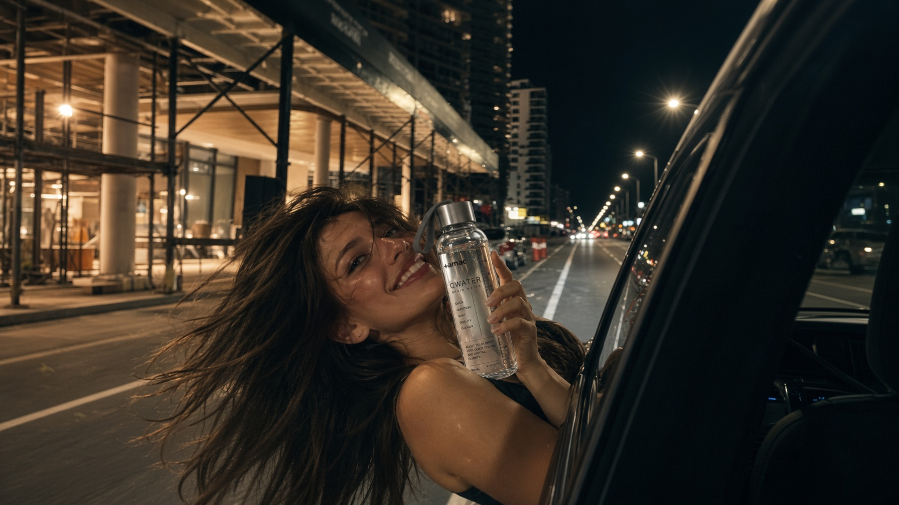
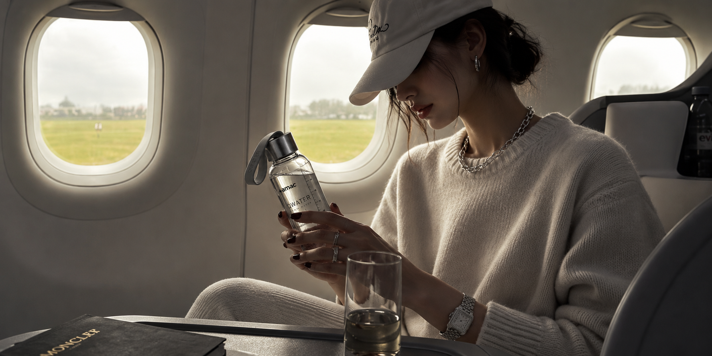
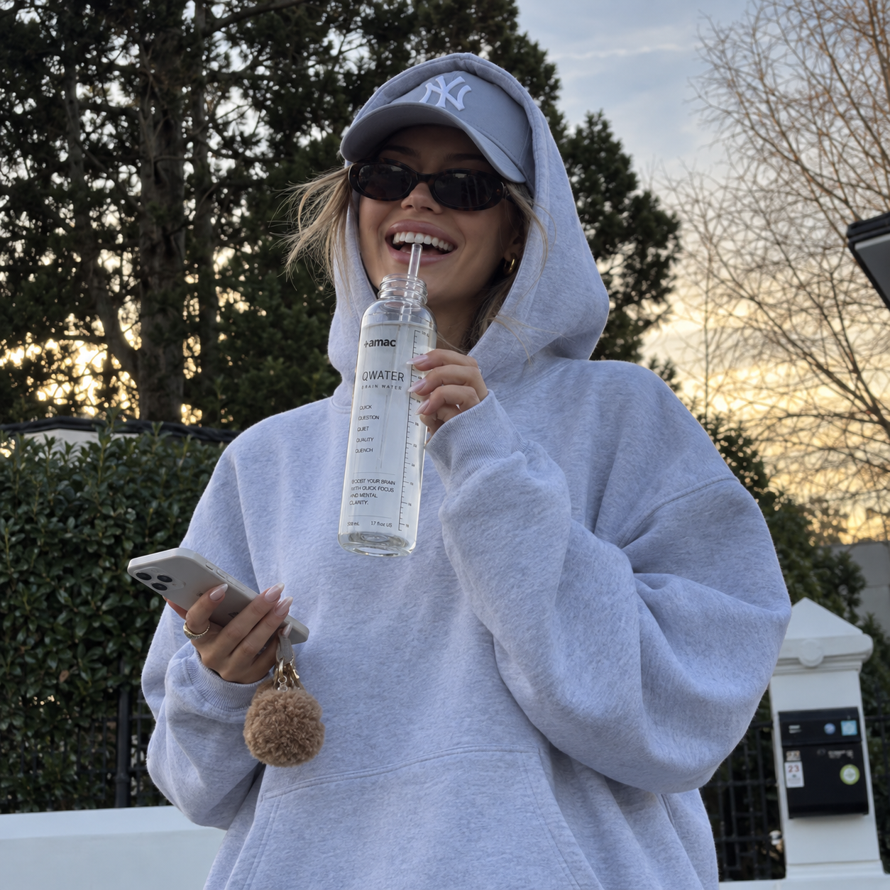
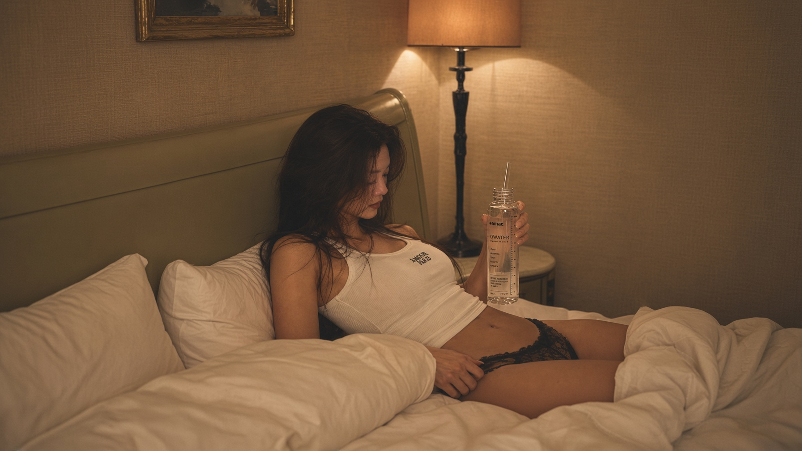

BE GOOD AT
STOPPING.
일을 잘하는 것과 끝없이 일하는 것은 다른 능력입니다.
자신의 종료 시점을 정할 수 있는 사람이 다음 날 다시 시작할 수 있습니다.
Q2는 멈춤을 의식적인 행동으로 만듭니다.
Working well and working endlessly are not the same skill.
People who can define an ending are better positioned to begin again tomorrow.
Q2 turns stopping into a deliberate action.
OVERSTIMULATION IS
NOT A STRATEGY.
강한 느낌이 항상 좋은 성능을 의미하지는 않습니다.
AMAC는 체감 강도를 경쟁하지 않고 사용자가 관리할 수 있는 포뮬러를 만듭니다.
목표는 과잉이 아니라 통제입니다.
A stronger sensation does not always mean better performance.
AMAC does not compete on intensity. We design formulas people can understand and manage.
The goal is not excess. It is control.
WATER FOR PEOPLE
WHO PERFORM.
성과를 만드는 것은 한 번의 폭발적인 하루가 아닙니다.
좋은 날과 평범한 날 모두 일정한 기준을 유지하는 것이 중요합니다.
Q1은 그 기준을 지키는 사람을 위해 존재합니다.
Performance is not built from one extraordinary day.
It comes from maintaining standards on both great days and ordinary ones.
Q1 is for people who want to keep that standard.

QUICK.
NOT AGGRESSIVE.
Q1은 한 번에 모든 것을 바꾸겠다고 말하지 않습니다.
물을 준비하고 한 포를 넣는 짧은 행동으로 업무 모드를 시작합니다.
복잡하지 않아야 매일 반복할 수 있습니다.
Q1 does not promise to change everything in an instant.
Prepare water, add one stick and begin work mode.
A ritual has to stay simple if you want to repeat it every day.
BECOME HARD
TO DISTRACT.
세상에서 방해 요소를 모두 없앨 수는 없습니다.
대신 무엇에 시간을 줄 것인지는 선택할 수 있습니다.
Q1은 중요한 일로 돌아오는 사람의 상징이 됩니다.
You cannot remove every distraction from the world.
But you can decide what deserves your time.
Q1 becomes a symbol for returning to what matters.

ONE BOTTLE
BY THE BED.
Q1의 자리가 책상이라면 Q2의 자리는 침대 근처입니다.
제품의 위치 자체가 행동을 기억하게 만듭니다.
AMAC QWATER는 공간까지 루틴의 일부로 봅니다.
If Q1 belongs on the desk, Q2 belongs near your evening space.
Where a product lives can remind you what comes next.
AMAC QWATER treats space itself as part of the ritual.
NIGHT IS
A PROTOCOL.
밤을 우연에 맡기지 마십시오.
조명을 낮추고, 화면을 멀리하고, 물을 준비하고, Q2를 선택합니다.
반복 가능한 순서가 저녁을 더 단순하게 만듭니다.
Do not leave the night entirely to chance.
Lower the lights. Put the screen away. Prepare water. Choose Q2.
A repeatable sequence makes the evening simpler.

THE LATER YOU WORK,
THE MORE YOU NEED
AN ENDING.
늦게까지 일했다면 남은 시간을 더 자극적으로 채울 필요가 없습니다.
일에서 개인의 시간으로 넘어가는 짧은 구간을 만드십시오.
Q2는 그 경계를 시각적으로 보여줍니다.
If you worked late, the rest of the night does not need more stimulation.
Create a short boundary between work and your personal time.
Q2 makes that boundary visible.